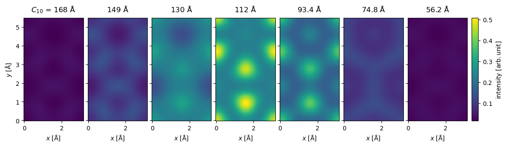
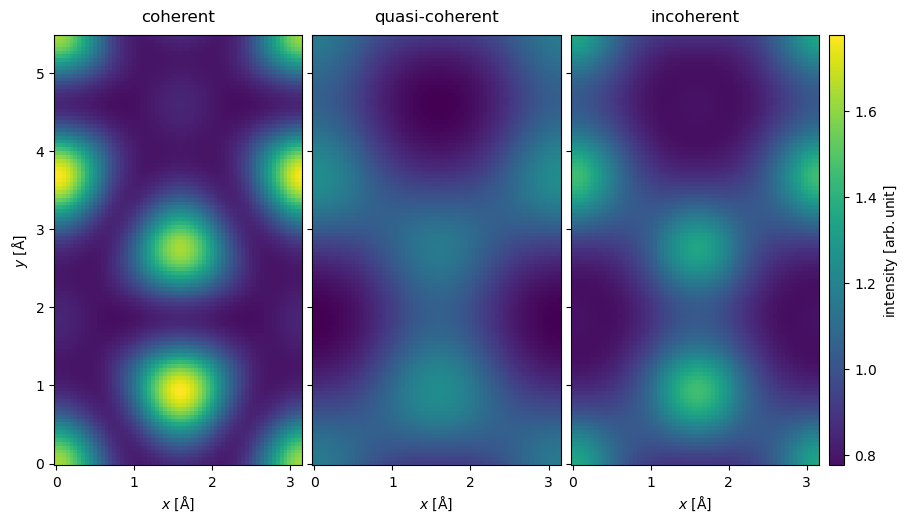
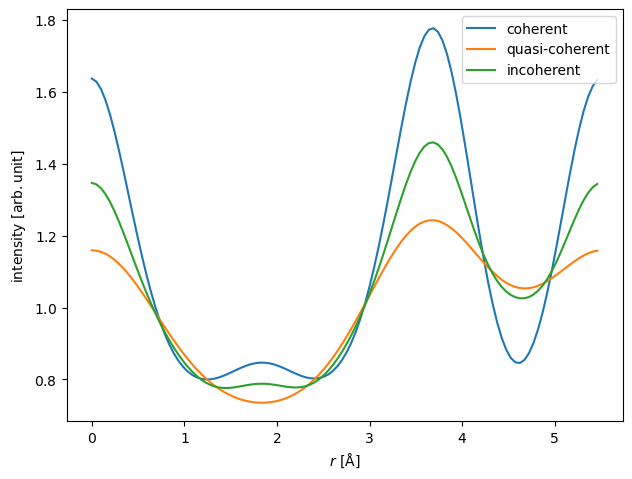
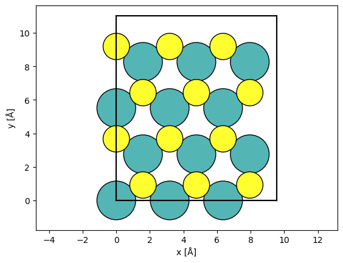
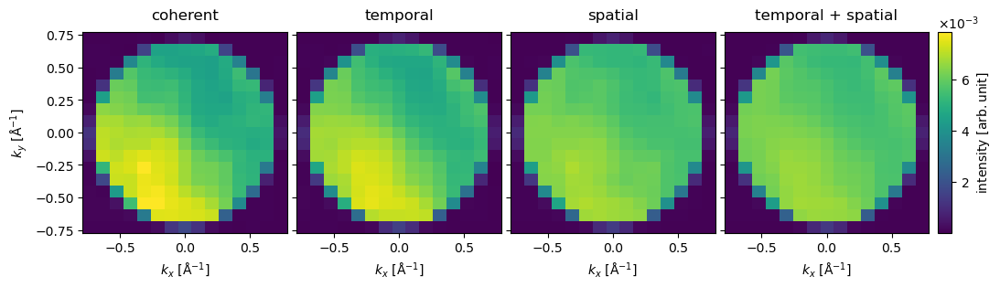
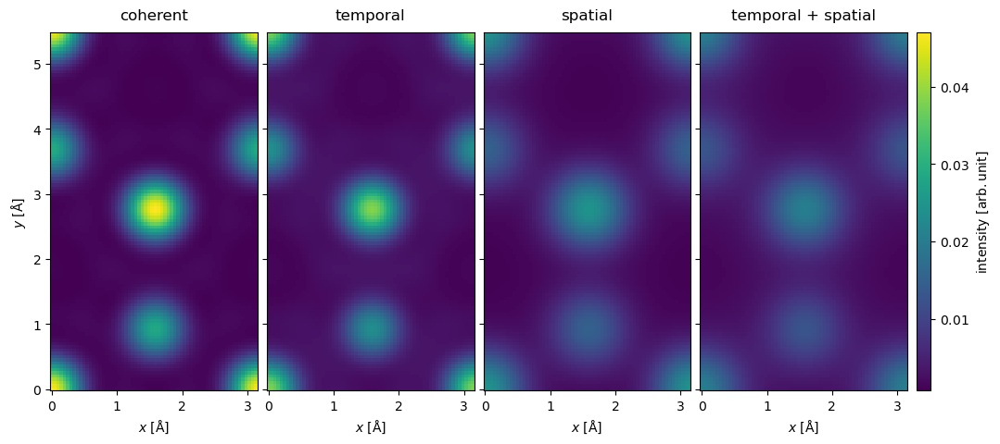
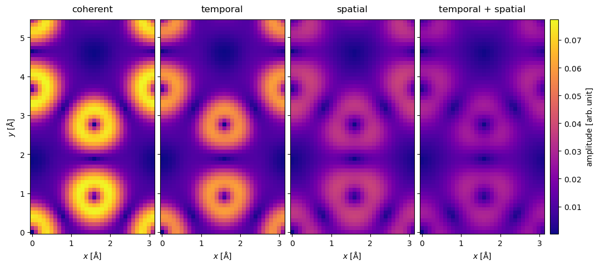

Partial coherence#
In our walkthrough on the contrast transfer function, we described how partial coherence may be approximated by multiplication with an envelope function. This approach is not always appropriate for simulating experiments with plane wave illumination and it is never appropriate for simulating experiments with a convergent beam. In this walkthrough, we cover a more accurate approach and compare fully coherent, quasi-coherent and incoherent simulations.
Partial coherence with plane waves#
When imaging with plane waves, partial temporal coherence (due to energy spread) is generally much more important than partial spatial coherence (due to source size). For this reason, our walkthrough will focus on partial temporal coehrence.
As a test system, we simulate an exit wave at \(80 \ \mathrm{keV}\) using a sample of MoS2.
atoms = ase.build.mx2(vacuum=2)
plane_wave = abtem.PlaneWave(energy=80e3, sampling=0.05)
exit_wave = plane_wave.multislice(atoms)
We first do the coherent and quasi-coherent simulations, we use Scherzer defocus with a spherical aberration of \(-20 \ \mu m\) and a focal spread of \(52.50 \ \mathrm{Å}\). An identical simulation was already performed in the walkthrough on the CTF.
energy = 80e3
Cs = -20e-6 * 1e10
focal_spread = 52.50
# Simulate coherent image
ctf_coherent = abtem.CTF(Cs=Cs, energy=energy)
ctf_coherent.defocus = ctf_coherent.scherzer_defocus
ctf_coherent.semiangle_cutoff = ctf_coherent.crossover_angle
image_coherent = exit_wave.apply_ctf(ctf_coherent).intensity().compute()
# Create CTF with temporal coherence envelope
ctf_quasi_coherent = ctf_coherent.copy()
ctf_quasi_coherent.focal_spread = focal_spread
# Run multislice and get intensity
image_quasi_coherent = exit_wave.apply_ctf(ctf_quasi_coherent).intensity().compute();
In the fully incoherent model of partial temporal coherence, we integrate over the image intensity at different defocii
where the image intensity at a defocus, \(\Delta f\), is given as
where, \(\psi_{exit}\), is the exit wave function and \(\chi(\Delta f)\) is the phase aberrations at \(\Delta f\). For clarity we have omitted both real and reciprocal space coordinates.
The weighting function, \(p(\Delta f)\), is assumed to be Gaussian
where \(\sigma\) is the standard deviation of the defocus distribution. Note that the focal_spread parameter of the quasi-coherent CTF uses the 1/e width convention, related to \(\sigma\) by \(\delta = \sqrt{2}\,\sigma\).
We can approximate Eq. (5) as a Riemann sum
where we need to choose a set of \(N\) samples
where \(n=0,1,\ldots,N\). The Gaussian is unbounded, however, we may assume that contributions beyond a chosen truncation, \(\Delta f_{truncation}\), are small enough to be neglected.
To calculate this in abTEM, we create the distribution in Eq. (6) using abtem.distributions.gaussian, we can then copy the coherent CTF from above and set the defocus to this distribution. The center of the distribution is set to the Scherzer defocus (\(\Delta f_0 = 111.92 \ \mathrm{Å}\)) and the standard deviation is set to the focal spread (\(\sigma = 52.5 \ \mathrm{Å}\)). The truncation of the Riemann sum set to \(\Delta f_{truncation} = 1.5 \sigma = 78.75 \ \mathrm{Å}\) and we use \(N=7\) linearly spaced samples. This was found to be sufficent for a reasonably converged simulation.
defocus_distribution = abtem.distributions.gaussian(
center=ctf_coherent.defocus,
standard_deviation=focal_spread / 2**0.5, # convert 1/e width → standard deviation
num_samples=7,
sampling_limit=1.5,
)
ctf_incoherent = ctf_coherent.copy()
ctf_incoherent.defocus = defocus_distribution
We apply the CTF as usual and calculate the intensity, obtaining the ensemble of images representing \(p(\Delta f_n) I(\Delta f_n)\) for each defocus sample.
images_incoherent = exit_wave.apply_ctf(ctf_incoherent).intensity()
images_incoherent.compute()
images_incoherent.axes_metadata
type label coordinates
------------- ------- -----------------------
ParameterAxis C10 [Å] 167.61 149.05 ... 56.24
RealSpaceAxis x [Å] 0.00 0.05 ... 3.13
RealSpaceAxis y [Å] 0.00 0.05 ... 5.46
We show the ensemble of images below, we see that the image intensity has the highest weight at \(\Delta f_0 = 111.92 \ \mathrm{Å}\) and drops off to almost zero at \(\Delta f_0 \pm \Delta f_{truncation}\).
images_incoherent.show(
explode=True,
figsize=(13, 5),
common_color_scale=True,
cbar=True,
);

To obtain the incoherent image, we sum across the image ensemble.
image_incoherent = images_incoherent.sum(0)
We show a comparison between the fully coherent, the quasi-coherent and the incoherent summation below. We see that while the quasi-coherent approximation is qualitatively similar to the incoherent summation, there is clear quantitative differences between the two models.
stack = abtem.stack(
[image_coherent, image_quasi_coherent, image_incoherent],
("coherent", "quasi-coherent", "incoherent"),
)
stack.show(
common_color_scale=True,
explode=True,
cbar=True,
figsize=(18, 5),
);

The quantitative differences are clearer when shown as a line profile.
stack.interpolate_line(start=(0, 0), end=(0, stack.extent[1])).show(legend=True);

It should be noted that the quasi-coherent model is better for smaller focal spread, hence, it may be more appropriate at higher electron energies.
Partial coherence with probes#
We can also simulate partial temporal coherence using probe wave functions using the weighted incoherent integral in Eq. (5). However, we now have to integrate over the initial conditions of the wave functions
where \(\mathcal{M}\) is the multislice operator, defined in Eq. (3) in the walkthrough on multislice. This means that a run of the multislice algorithm is required for every \(\Delta f_n\) sample, and hence, including temporal partial incoherence can be expensive.
Partial spatial coherence can be simulated by a weighted integral over source positions. For a probe at the position, \((x_0, y_0)\), we have to do a 2D integral over the probe displacements \((\Delta x, \Delta y)\)
where each image is given as \( \hat{I}(\Delta x, \Delta y) = \left\| p(\Delta x, \Delta y) \mathcal{M} \left[\psi_0(x_0 + \Delta x, y_0 + \Delta y) \right] \right\|^2 \quad . \)
Performing this 2D integral as a Riemann sum is very expensive. Fortunately, in scanning TEM, we already have to simulate a dense sampling of probe positions. Hence, we can just use those samples, this is equivalent to applying a Gaussian filter, and thus partial spatial coherence is almost free in scanning TEM.
This trick obviously does not work for simulating diffraction with single probes, such as CBED, however, in CBED we typically use a small aperture, making partial spatial incoherence insignificant.
As a test system, we simulate a 4D-STEM dataset at \(80 \ \mathrm{keV}\) using a sample of MoS2. First, we create a model of MoS2, large enough to accomodate the size of our probe.
atoms = ase.build.mx2(vacuum=2)
atoms = abtem.orthogonalize_cell(atoms) * (3, 2, 1)
abtem.show_atoms(atoms);

Next, we create the probe.
energy = 80e3
probe_coherent = abtem.Probe(energy=energy, semiangle_cutoff=30, sampling=0.05)
We define a Gaussian distribution over the defocus. Given an energy spread of \(\Delta E = 0.15 \ \mathrm{eV}\) and a chromatic aberration of \(C_c = 1 \ \mathrm{mm}\), the standard deviation of the defocus distribution is
\( \sigma = C_c \frac{\Delta E}{E} = 18.75 \ \mathrm{Å} \quad . \)
Note: to use this as the focal_spread of a quasi-coherent CTF (which expects the 1/e width),
one would instead pass \(\delta = \sqrt{2}\,\sigma\).
chromatic_aberration = 1.0 * 1e-3 * 1e10
energy_spread = 0.15
sigma_defocus = chromatic_aberration * energy_spread / energy # standard deviation [Å]
defocus_distribution = abtem.distributions.gaussian(
center=0.0,
standard_deviation=sigma_defocus,
num_samples=11,
sampling_limit=2,
ensemble_mean=False,
)
print("Defocus standard deviation =", sigma_defocus, "Å")
Defocus standard deviation = 18.75 Å
We run the multislice simulations, see our walkthrough for details.
probe_temporal = abtem.Probe(
energy=energy, semiangle_cutoff=30, sampling=0.05, defocus=defocus_distribution
)
detector = abtem.PixelatedDetector()
scan = abtem.GridScan((0, 0), (1 / 3, 1 / 2), fractional=True, potential=atoms)
measurement_coherent = probe_coherent.scan(
atoms, detectors=detector, scan=scan
).compute()
measurement_temporal = probe_temporal.scan(
atoms, detectors=detector, scan=scan
).compute()
Partial spatial coherence is added using the gaussian_source_size method which applies a gaussian blur accross the scan dimensions. We emphasize that we do not blur individual diffraction patterns, rather we mix adjacent diffraction patterns weighted by a gaussian as a function of the distance between the probe position at which the pattern was collected.
source_size = 0.3
measurement_spatial = measurement_coherent.gaussian_source_size(source_size)
measurement_temporal_spatial = measurement_temporal.gaussian_source_size(source_size)
We stack the DiffractionPatterns for more convenient plotting.
stacked = abtem.stack(
(
measurement_coherent,
measurement_temporal.mean(0),
measurement_spatial,
measurement_temporal_spatial.mean(0),
),
("coherent", "temporal", "spatial", "temporal + spatial"),
)
We select the diffraction patterns with the index (1, 1), i.e. the patterns collected to the upper right of the Mo atom. We crop the diffraction patterns to just above the bright field disk and plot them on an exploded plot.
stacked[:, 1, 1].crop(30).show(
figsize=(12, 6),
explode=True,
common_color_scale=True,
cbar=True,
);

It is immediately clear that partial coherence reduces the contrast in the diffraction patterns.
Next we show the medium angle scattering intensity. It should be noted that the order in which the the integrate_radial and the gaussian_source_size methods are applied does not matter.
stacked.integrate_radial(50, 150).interpolate(0.05).show(
figsize=(12, 6),
explode=True,
common_color_scale=True,
cbar=True,
);

Finally we show the absolute value of the center of mass
stacked.center_of_mass().interpolate(0.1).abs().show(
figsize=(12, 6),
explode=True,
common_color_scale=True,
cbar=True,
cmap="plasma",
);

The preceding results show that partial spatial coherence is very important, we see that it both lowers the contrast and generally changes both the integrated and COM images. Partial temporal coherence, even at this low energy, had a less important role and its main contribution was to lower the contrast. We should also note that the cost of including partial spatial coherence is almost non-existent, whereas partial temporal coherence may give a \(\sim 10 x\) overhead.